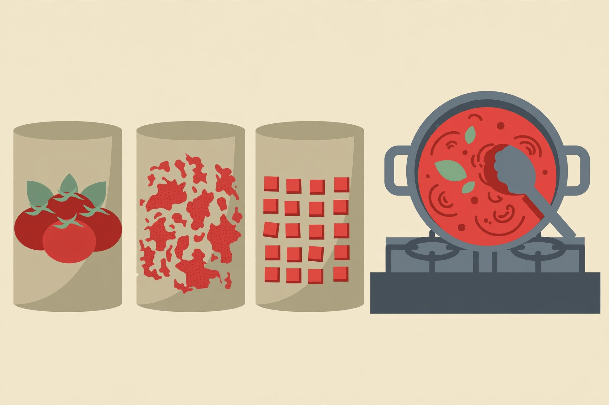

Tomato-based pantry meals from one can, five ways

One can of tomatoes is the closest thing the cupboard has to a fresh ingredient. It can become a pasta sauce, a soup, a stew base, a baked topping, or the cooking liquid for rice and beans — which is why tomato cans pile up in most cupboards, and why they also stall there. Tomato roundups tend to be long lists of unrelated recipes, each quietly assuming a different can: whole here, crushed there, diced somewhere else, with no explanation of whether the can on hand will actually work. This guide starts from the can instead. It verifies what each canned tomato form actually is, shows which dinners each form can honestly carry, and gives the substitution rules — including the one ingredient, calcium chloride, that decides whether a sauce will ever go smooth.
Spec check: what is actually in each can
The Reluctant Gourmet's canned tomato guide states the core distinctions plainly, in its own summary: whole tomatoes break down into something silky with time, diced tomatoes stay firm and chunky no matter how long they cook because of the calcium chloride used in processing, crushed tomatoes split the difference, and paste is a concentrated flavour addition used in small amounts. Food Republic's comparison adds the composition behind those labels: crushed tomatoes are whole plum tomatoes that have been pulverized and usually mixed with tomato puree or juice, while diced tomatoes are cubed tomatoes processed with citric acid and calcium chloride to keep their shape. The same guide notes canned tomatoes are processed at full ripeness, which is why a canned tomato in a cooked dish can outperform an out-of-season fresh one. None of this is trivia. Every substitution success or failure in the formats below traces back to these facts — especially the firming agent in the diced can.
The tomato shelf, compared
| Form | Texture in the can | Best cupboard use | Substitution note |
|---|---|---|---|
| Whole peeled | Intact tomatoes in juice or puree | Sauces and braises where breakdown is wanted | Most versatile: crush by hand to any texture |
| Crushed | Partially broken, in a smooth base | Quick pasta sauces, dishes needing body | The shortcut whole tomato |
| Diced | Separate pieces that hold their shape | Stews, soups, chunky sauces | Will not go smooth; blend to approximate crushed |
| Paste | Thick concentrate | Depth for soups, stews, and sauces, by the spoonful | Not a sauce base on its own |
| Stewed | Pre-cooked, seasoned pieces | Fast toppings and egg dishes | Already seasoned: adjust salt and spices down |
The Safeway canned-goods guide's summary table lands in the same place: whole peeled for slow sauces where the cook controls the breakdown, diced for chili, salsa, soups, and chunky sauces, crushed for quick pasta sauces and dishes that need body, and paste for small additions to soups, stews, braises, and sauces. Two independent guides agreeing on the map is a good sign the map is real.
Format 1: the 20-minute crushed tomato pasta sauce
- Warm olive oil with garlic — fresh, jarred, or powder — and chili flakes for about a minute.
- Stir in a spoonful of tomato paste and cook it in the oil for a minute. The Reluctant Gourmet guide stresses this step: paste cooked in oil first gains depth, while raw paste tastes metallic and sharp.
- Add a can of crushed tomatoes — or whole tomatoes squeezed into the pot by hand — with salt and dried oregano or basil.
- Simmer 15 to 20 minutes, stirring now and then, until the sauce thickens enough that a spoon leaves a brief trail. The same guide notes the metallic edge in canned tomatoes cooks out with time, and a small pinch of sugar can balance acidity faster when a particular can tastes sharp.
- Toss with drained pasta and a splash of pasta water. A can of white beans or tuna folded through turns the sauce into the whole dinner.
What success looks like: the sauce coats the pasta instead of pooling under it, tastes rounded rather than tinny, and — if beans or fish went in — still reads as a tomato sauce with substance, not a stew poured over noodles.
Format 2: creamy tomato soup from the shelf
The pantry soup formula published by Tired Mom Supermom pairs a large 28-ounce can of crushed tomatoes with two cups of broth, simmered for about 15 minutes, blended smooth, and finished with cream — with canned coconut milk named as the alternative in that recipe's ingredient list. The cupboard version keeps the structure and swaps the finish to what the shelf holds: evaporated milk stirs in without splitting as readily as fresh cream, and the soup works without any dairy at all when a spoonful of peanut butter is blended in for body — a swap to make deliberately and taste as it goes, not a promise it tastes identical. Grilled cheese alongside is the classic partner when bread and cheese exist; crackers crumbled over the bowl are the shelf-only version.
Format 3: tomato and legume stew, the rice-or-toast stew
WiseMove's pantry-dinner guide builds a tomato and lentil stew from a can of chopped tomatoes, a can of lentils, frozen vegetables, and stock, seasoned with smoked paprika and cumin and simmered for about 20 minutes until thickened — and notes it can be served with rice one night and mashed potato the next. The same bones carry chickpeas or white beans in place of lentils, with the spice direction deciding the dinner's accent: paprika and cumin toward a smoky stew, curry powder toward a curry-style pot, oregano and basil toward an Italian braise. Because diced tomatoes hold their shape here by design, this is the one format where the diced can is not a compromise but the correct choice — the pieces stay distinct in a stew that is meant to be spooned, not poured.
Format 4: eggs and beans in tomato — the stewed-tomato shortcut
Tasting Table's tour of canned tomato types notes stewed tomatoes — pre-cooked before canning, often with additional seasonings — are a natural fit for shakshuka-style dishes. The cupboard version is forgiving: a can of stewed or diced tomatoes simmers with garlic and chili until slightly thickened, white beans or chickpeas join for five minutes, and eggs are cracked into wells in the sauce and covered until just set, when eggs are available. Without eggs, the same pan over rice or toast is dinner. The rule carried over from the spec check applies with full force: because stewed tomatoes arrive seasoned, taste before adding salt — the can has already made part of that decision.
Using up the paste can, and storing what is opened
Tomato paste is the can most likely to be half-used and forgotten. The Reluctant Gourmet guide's storage advice solves it directly: once opened, canned tomatoes transfer to a freezer-safe container and freeze for up to three months, and paste is especially worth freezing in tablespoon-sized portions, since most recipes use a small amount. One tray of frozen paste portions turns every future soup and stew into a one-spoon decision. Cooked tomato dishes follow the general leftover rule on FoodSafety.gov: refrigerate perishable leftovers within two hours, use them within about three to four days, and reheat them to 165°F (74°C). A tomato sauce made tonight is therefore a planned ingredient for the next three nights — over pasta, under eggs, or as the liquid base for rice — not a gamble on day five.
FAQ
Only diced tomatoes on hand, and a smooth sauce is wanted. What now? Blend them. Food Republic's comparison recommends pouring diced tomatoes into a blender to approximate crushed, while warning that cooking alone will not fully break them down because of the calcium chloride firming. Expect a sauce that is smooth-ish and entirely usable, not identical to a whole-tomato sauce.
Are canned tomatoes worse than fresh? For cooked dishes, the guides above argue the opposite outside peak season: canned tomatoes are processed at full ripeness, so a sauce or braise that cooks for half an hour is exactly where they perform best. Save fresh tomatoes for eating raw.
What does a pinch of sugar actually do? It balances acidity rather than sweetening. Per the Reluctant Gourmet guide, some canned tomatoes — budget domestic brands in particular — run noticeably acidic, and a small pinch rounds that sharpness; longer cooking achieves a similar softening more slowly.
General information only. Follow basic food-safety practices and discard any stored food that looks, smells, or tastes off.